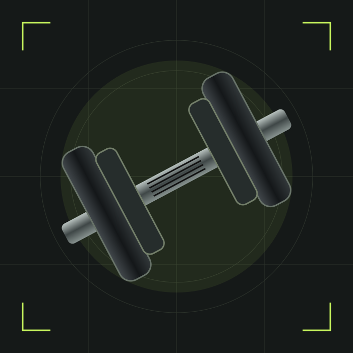

Съобрази се с графика си.
Избери тренировъчни дни, които можеш да спазваш. Повече дни не означава автоматично повече прогрес.
ТВОЯТ ПЛАН. ТВОЕТО ТЕМПО.
Влез в залата с ясна посока. Четири тренировъчни сплита, две нива и конкретен план за всяка тренировка.

ИЗБЕРИ КАК ДА ТРЕНИРАШ
Раздели движенията на бутане, дърпане и крака.
ВИЖ ПРОГРАМАТА ↗02ДОБЪР ПЪРВИ ИЗБОРРедувай горна и долна част на тялото.
ВИЖ ПРОГРАМАТА ↗032 НИВАОтдели тренировка за всяка основна мускулна група.
ВИЖ ПРОГРАМАТА ↗042 НИВАКомбинирай гърди с гръб, рамене с ръце и отделен ден за крака.
ВИЖ ПРОГРАМАТА ↗Избери тренировъчни дни, които можеш да спазваш. Повече дни не означава автоматично повече прогрес.
Започни с контролируеми тежести. Всяко повторение трябва да изглежда толкова стабилно, колкото първото.
Записвай тежестите и повторенията. Малката следваща стъпка е по-важна от перфектната тренировка.